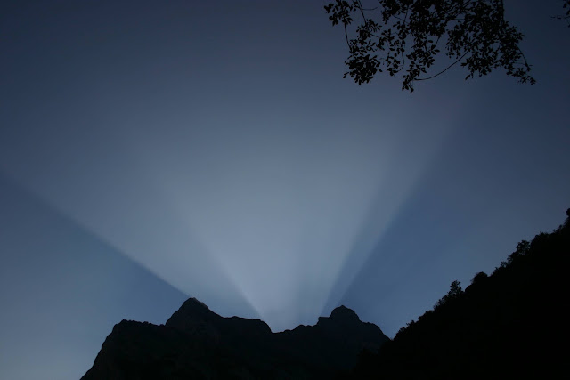

Ley Natural del Tamaño
Ciertos montes presentan la cualidad abrumadora
de rozar delicadamente las nubes más altas,
ciertos montes que no es más correcto
atribuir a la tierra
que al cielo.
Sin embargo, hay quien los describe
como discreto montoncito de piedras
sobre el cual subió en busca de límites
y, aún así, no encontró nada nuevo:
tras el horizonte, no hubo si no
más horizontes similares.
La misma paradoja se puede trasladar a las sortijas
con, a penas, extensión para envolver un exquisito anular
cuando a fuerza de quererlas,
a fuerza de recorrer sus órbitas internas
centrifugan su insignificante circunferencia
hasta abrazar, o aplastar, ciertos planetas,
ciertas uniones.
Tratando asuntos más evidentes,
cabe señalar que todo futuro restante
se puede anotar en un pedacito de papel
como ya ha quedado demostrado
con anteriores futuros, repletos de fechas,
de besos, muertes, lugares y citas.
Entonces lo llamáis pasado
le cambiáis el nombre por reducirlo
a la talla del diario
mientras que las palabras son las mismas.
Solo al henchirse de significado tales palabras,
al inflarse de tacto, capacidad de ser tocado,
abarcar los sentidos y constituir completitud:
llenar el universo de instante
lo llamáis presente.
Del mismo modo, dos personas
separadas, lejos, muy lejos
necesitando millones, miles de millones
de kilómetros inmensos
para colocar entre ambos,
no suponen más que un diminuto vacío
una desazón indiferente que
nunca gasta mucho más de un centímetro.
Pero si se observan otras dos personas
juntas, cerca, muy cerca
a menos de un centímetro
una boca de la otra
el aire circundante comienza a no ser suficiente
las miradas se atraviesan transcendiendo
creciendo sin límite hasta llenar la habitación,
la Tierra comienza a pesar más y más
todos los números se quedan pequeños
y algunos empiezan a faltar de tanto gastarlos.
Creo que es por la sensación extraña,
y poco habitual, de ser, de ser en otro,
de que otro sea en uno mismo,
que el espacio, por infinito que sea,
parezca insuficiente
para algo tan inmenso que no puede más que
rendundar en su inmensidad.
Por eso, en medio de toda esta confusión
de grande y pequeño,
diminuto y gigante
donde los números y las distancias
no aclaran, al fin y al cabo, nada
no existe más ley
que la ley del tamaño natural,
simple por no distinguir más que
lo que cabe en una mano
y lo que no.
No hace falta más,
no es necesaria otra distinción que
la de qué hay que llevar consigo,
guardar, proteger o poseer
o, por el contrario,
es nada más para acariciar,
para tocar, o acompañar en su movimiento.
